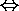
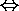

Propositional Logic
Reasoning with Propositions
Logical reasoning is the process of drawing conclusions from premises using rules of inference.
The basic inference rule is modus ponens. It states that if both
P  Q
and P hold, then Q can be concluded, and it is written as
Q
and P hold, then Q can be concluded, and it is written as
P
P Q
-----
Q
Here the lines above the dotted line are premises and the line below it is the conclusion
drawn from the premises.
For example if "if it rains, then the game is not played" and "it rains"
are both true, then we can conclude that the game is not played.
In addition to modus ponens, one can also reason by using
identities and
implications.
If the left(right) hand side of an identity appearing in a proposition is replaced by the right(left)
hand side of the identity, then the resulting proposition is logically equivalent to the original proposition.
Thus the new proposition is deduced from the original proposition. For example in the proposition
P  (Q R),
(Q R) can be replaced with
(Q
(Q R),
(Q R) can be replaced with
(Q
 R) to conclude
P
(Q
R), since
(Q R)

(Q
R)
R) to conclude
P
(Q
R), since
(Q R)

(Q
R)
Similarly if the left(right) hand side of an implication appearing in a proposition is
replaced by the right(left)
hand side of the implication, then the resulting proposition is logically implied by the original proposition.
Thus the new proposition is deduced from the original proposition.
The tautologies listed as "implications" can also be considered
inference rules
as shown below.
Example of Inferencing
Consider the following argument:
1. Today is Tuesday or Wednesday.
2. But it can't be Wednesday, since the doctor's office is open today,
and that office is always closed on Wednesdays.
3. Therefore today must be Tuesday.
This sequence of reasoning (inferencing) can be represented
as a series of application of modus ponens to the corresponding propositions
as follows.
The modus ponens is an inference rule which deduces Q from
P -> Q
and P.
T: Today is Tuesday.
W: Today is Wednesday.
D: The doctor's office is open today.
C: The doctor's office is always closed on Wednesdays.
The above reasoning can be represented by propositions as follows.
1. T V W
2. D
C
------------
~W
------------
3. T
To see if this conclusion T is correct, let us first find the relationship
among C, D, and W:
C can be expressed using D and W. That is, restate C first as
the doctor's office is always closed
if it is Wednesday. Then C <-> (W -> ~D)
Thus
substituting (W -> ~D)
for C, we can
proceed as follows.
D
W -> ~D
------------
~W
which is correct by modus tollens.
From this ~W combined with T V W of 1. above,
~W
T V W
------------
T
which is correct by disjunctive syllogism.
Thus we can conclude that the given argument is correct.
To save space we also write this process as follows eliminating one of the ~W's:
D
W -> ~D
------------
~W
T V W
------------
T
Next -- Proof of Identities
Back to Table of Contents